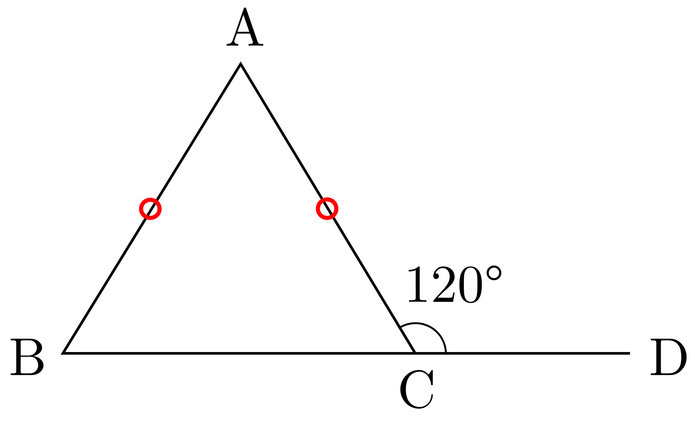

.png)
繝槭え繝ｳ繝医・繝槭せ
謨ｰ蟄ｦ縺ｮ螳夂炊縺ｨ縺昴・險ｼ譏・/p>
謨ｰ蟄ｦ縺ｮ螳夂炊縺ｨ縺昴・險ｼ譏・/p>
荳芽ｧ貞ｽ｢縺ｮ1縺､縺ｮ螟冶ｧ偵・縲√◎縺ｮ螟冶ｧ偵↓髫｣謗･縺励↑縺・縺､縺ｮ蜀・ｧ偵・蜥後↓遲峨＠縺・�・
荳芽ｧ貞ｽ｢\( ABC \)繧定�・∴縲―( BC \)縺ｮ蟒ｶ髟ｷ邱壻ｸ翫↓轤ｹ\( D \)繧偵→繧翫�―( 竏�ACD \)繧剃ｸ芽ｧ貞ｽ｢縺ｮ螟冶ｧ偵→縺吶ｋ縲・/p>
逶ｴ邱壻ｸ翫・隗貞ｺｦ縺ｮ蜥後ｂ\( 180 \)蠎ｦ縺ｧ縺ゅｋ縺溘ａ縲∵ｬ｡縺ｮ蠑上′謌舌ｊ遶九▽縲・/p>
縺薙・2縺､縺ｮ蠑上ｒ豈碑ｼ・☆繧九→縲―(竏�ACD\)縺ｨ\(竏�ABC + 竏�BAC\)縺檎ｭ峨＠縺・％縺ｨ縺後ｏ縺九ｋ縲・/p>
繧医▲縺ｦ縲∽ｸ芽ｧ貞ｽ｢縺ｮ螟冶ｧ偵・縲√◎縺ｮ螟冶ｧ偵↓髫｣謗･縺励↑縺・縺､縺ｮ蜀・ｧ偵・蜥後↓遲峨＠縺・％縺ｨ縺瑚ｨｼ譏弱＆繧後◆縲・險ｼ譏守ｵ・
荳芽ｧ貞ｽ｢ \( ABC \) 縺ｫ縺翫＞縺ｦ縲∝､冶ｧ・\( \angle ACD \) 縺・\( 110ﾂｰ \) 縺ｧ縺ゅｊ縲∝・隗・\( \angle BAC \) 縺・\( 50ﾂｰ \) 縺ｧ縺ゅｋ縲ゅ％縺ｮ縺ｨ縺阪�∝・隗・\( \angle ABC \) 縺ｮ螟ｧ縺阪＆繧呈ｱゅａ繧医�・/strong>
隗｣遲・/span>螟冶ｧ偵・螳夂炊繧医ｊ縲∽ｸ芽ｧ貞ｽ｢縺ｮ螟冶ｧ偵・縺昴ｌ縺ｨ髫｣繧雁粋繧上↑縺・縺､縺ｮ蜀・ｧ偵・蜥後↓遲峨＠縺・�ゅ＠縺溘′縺｣縺ｦ縲・/p>
\( \angle ACD = \angle BAC + \angle ABC \)
荳弱∴繧峨ｌ縺溷�､繧剃ｻ｣蜈･縺吶ｋ縺ｨ縲・/p>
\( 110ﾂｰ = 50ﾂｰ + \angle ABC \)
\( \angle ABC = 110ﾂｰ - 50ﾂｰ = 60ﾂｰ \)
縺励◆縺後▲縺ｦ縲―( \angle ABC = 60ﾂｰ \)
荳芽ｧ貞ｽ｢ \( ABC \) 縺ｫ縺翫＞縺ｦ縲∝､冶ｧ・\( \angle ACD \) 縺・\( 130ﾂｰ \) 縺ｧ縺ゅｊ縲∝・隗・\( \angle ABC \) 縺・\( 45ﾂｰ \) 縺ｧ縺ゅｋ縲ゅ％縺ｮ縺ｨ縺阪�∝・隗・\( \angle BAC \) 縺ｮ螟ｧ縺阪＆繧呈ｱゅａ繧医�ゅ＆繧峨↓縲∵ｮ九ｊ縺ｮ蜀・ｧ・\( \angle ACB \) 縺ｮ螟ｧ縺阪＆繧よｱゅａ繧医�・/strong>
隗｣遲・/span>螟冶ｧ偵・螳夂炊繧医ｊ縲∽ｸ芽ｧ貞ｽ｢縺ｮ螟冶ｧ偵・縺昴ｌ縺ｨ髫｣繧雁粋繧上↑縺・縺､縺ｮ蜀・ｧ偵・蜥後↓遲峨＠縺・�ゅ＠縺溘′縺｣縺ｦ縲・/p>
\( \angle ACD = \angle BAC + \angle ABC \)
荳弱∴繧峨ｌ縺溷�､繧剃ｻ｣蜈･縺吶ｋ縺ｨ縲・/p>
\( 130ﾂｰ = \angle BAC + 45ﾂｰ \)
\( \angle BAC = 130ﾂｰ - 45ﾂｰ = 85ﾂｰ \)
谺｡縺ｫ縲∽ｸ芽ｧ貞ｽ｢縺ｮ蜀・ｧ偵・蜥後・ \( 180ﾂｰ \) 縺ｧ縺ゅｋ縺溘ａ縲・/p>
\( \angle ACB = 180ﾂｰ - (\angle BAC + \angle ABC) \)
\( \angle ACB = 180ﾂｰ - (85ﾂｰ + 45ﾂｰ) = 180ﾂｰ - 130ﾂｰ = 50ﾂｰ \)
縺励◆縺後▲縺ｦ縲・/p>
\( \angle BAC = 85ﾂｰ \)縲―( \angle ACB = 50ﾂｰ \)
莉･荳九・蝗ｳ縺ｫ縺翫＞縺ｦ縲∽ｸ芽ｧ貞ｽ｢ \( ABC \) 縺ｮ螟冶ｧ・\( \angle ACD \) 縺ｯ \( 120ﾂｰ \) 縺ｧ縺ゅｋ縲ゅ∪縺溘�∬ｾｺ \( AB \) 縺ｨ霎ｺ \( AC \) 縺ｮ髟ｷ縺輔・遲峨＠縺上�∽ｸ芽ｧ貞ｽ｢ \( ABC \) 縺ｯ莠檎ｭ芽ｾｺ荳芽ｧ貞ｽ｢縺ｧ縺ゅｋ縲ゅ％縺ｮ縺ｨ縺阪�∝・隗・\( \angle BAC \) 縺ｮ螟ｧ縺阪＆繧呈ｱゅａ繧医�ゅ＆繧峨↓縲∽ｸ芽ｧ貞ｽ｢ \( ABC \) 縺ｮ莉悶・蜀・ｧ・\( \angle ABC \) 縺ｨ \( \angle ACB \) 縺ｮ螟ｧ縺阪＆繧よｱゅａ繧医�・/strong>
" class="theorem-image"> 隗｣遲・/span>縺ｾ縺壹�∝､冶ｧ偵・螳夂炊繧医ｊ縲∽ｸ芽ｧ貞ｽ｢縺ｮ螟冶ｧ偵・縺昴ｌ縺ｨ髫｣繧雁粋繧上↑縺・縺､縺ｮ蜀・ｧ偵・蜥後↓遲峨＠縺・�ゅ＠縺溘′縺｣縺ｦ縲・/p>
\( \angle ACD = \angle BAC + \angle ABC \)
荳弱∴繧峨ｌ縺・\( \angle ACD = 120ﾂｰ \) 繧医ｊ縲・/p>
\( \angle BAC + \angle ABC = 120ﾂｰ \)
谺｡縺ｫ縲∽ｸ芽ｧ貞ｽ｢ \( ABC \) 縺ｯ莠檎ｭ芽ｾｺ荳芽ｧ貞ｽ｢縺ｧ縺ゅｊ縲∬ｾｺ \( AB = AC \) 縺ｧ縺ゅｋ縺溘ａ縲∝ｺ戊ｧ・\( \angle ABC = \angle ACB \) 縺ｨ縺ｪ繧九�ゅ＠縺溘′縺｣縺ｦ縲∝・隗偵・蜥後・縲・/p>
\( \angle BAC + \angle ABC + \angle ACB = 180ﾂｰ \)
\( \angle ABC = \angle ACB \) 繧医ｊ縲・/p>
\( \angle BAC + 2\angle ABC = 180ﾂｰ \)
縺薙％縺ｧ縲―( \angle BAC + \angle ABC = 120ﾂｰ \) 繧剃ｻ｣蜈･縺吶ｋ縺ｨ縲・/p>
\( 120ﾂｰ + \angle ABC = 180ﾂｰ \)
\( \angle ABC = 60ﾂｰ \)
縺励◆縺後▲縺ｦ縲―( \angle BAC = 120ﾂｰ - 60ﾂｰ = 60ﾂｰ \)
縺ｾ縺溘�―( \angle ACB = \angle ABC = 60ﾂｰ \)
莉･荳翫ｈ繧翫�・/p>
\( \angle BAC = 60ﾂｰ \)縲―( \angle ABC = 60ﾂｰ \)縲―( \angle ACB = 60ﾂｰ \)